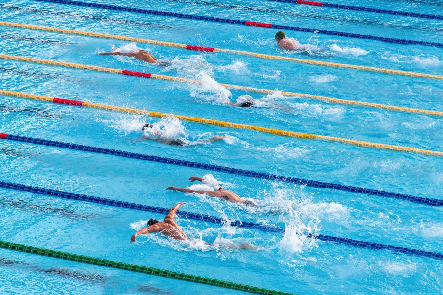
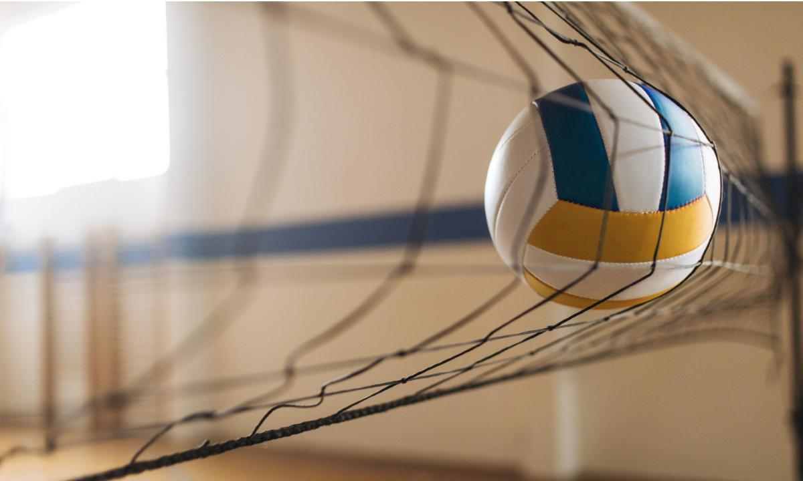

DEPORTES MÁS PRACTICADOS
Es un deporte de equipo jugado entre dos conjuntos de once jugadores cada uno, mientras los árbitros se ocupan de que las normas se cumplan correctamente. Es, ampliamente, considerado el deporte más popular del mundo, pues lo practican unas 270 millones de personas.

Es el arte de sostenerse y avanzar, usando los brazos y las piernas, sobre o bajo el agua. Puede realizarse como actividad lúdica o como deporte de competición.
Es un deporte de equipo, jugado entre dos conjuntos de cinco jugadores cada uno en cuatro períodos de cuartos de diez minutos cada uno.

Es un deporte que se juega con una pelota y en el que dos equipos, integrados por seis jugadores cada uno, se enfrentan sobre una área de juego separada por una red central.